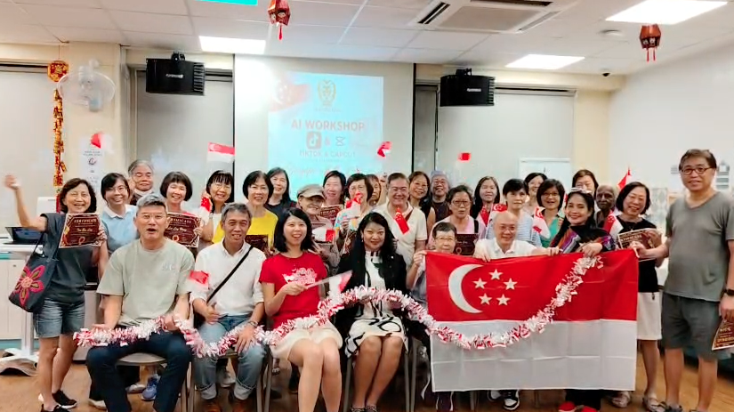

TikTok & CapCut workshop with seniors at Care Corner Toa Payoh 261A
Over 20 seniors from Care Corner Toa Payoh Blk 261A joined this hands-on TikTok and CapCut workshop, applying their new skills to create videos celebrating Singapore's 61st National Day. It was also part of our curriculum development for the Forward Deployed Engineer programme — developing talent from disadvantaged and physically challenged communities for AI implementation roles in key Singapore industries.
Learning outcomes:
- TikTok basics: Creating accounts, navigating the app, watching trends safely
- CapCut essentials: Cutting clips, adding music, text overlays, and simple transitions
- Digital storytelling: Using video to share personal stories and community pride

The seniors thoroughly enjoyed themselves — smiles all around, laughter during the editing challenges, and genuine pride in what they created. We're glad to partner with Care Corner Toa Payoh 261A to make these experiences possible.
What worked: Starting with familiar topics (cooking, family, hobbies) made the tools feel relevant rather than intimidating. The step-by-step handouts with screenshots helped participants continue practicing at home.
What we'll adjust: Bring more tablets for sharing — participants wanted to try editing together in pairs. Also, next time we'll include a session on using CapCut to edit existing family videos.
Feedback: "I can actually do this!" and "This is more fun than I thought it would be."
The best sign it worked: one participant asked to come back — not as a learner, but to help facilitate our future workshops. That's the loop we're trying to build: today's participants becoming tomorrow's guides.